[대박] 김새론 전남친이 말하는 김새론이 죽은 진짜 이유 (근황)

전남친 입장에서 기사가 뜸.
전남편 아니고 전남친임.


김새론이 보낸 문자라고 함.
2024년 11월에 남자(전남편)를 만났다고 함.
너무 외로워서 한눈 팔았다고 하는 거보니 저 당시 전남친(제보자)과 사귀고 있었지만 김새론이 바람 피운 걸로 추정.
이후에도 전남편이랑 힘들 때마다 연락하며 지내다고 함.
사진은 김새론이 자해하고나서 보낸 사진이라고 함.

왼쪽이 김새론이 뉴욕에서 결혼한 전남편.
그러니까 타임라인을 정리하면 김새론은 원래 사귀던 남자친구가 있었는데 그 상황에서 작년 11월에 새로운 남자를 만나 임신환승을 하게 되고 그 후 낙태한 뒤 1월에 결혼함.
근데 그 사이인 크리스마스 이브, 크리스마스 당일은 전남친이랑 같이 보냈나봄.
ㄹㅇ… 어질어질하노…

왼쪽이 김새론, 오른쪽이 언론사에 제보한 전남친.
인터넷 짤방으로 많이 보던 구도 아님?
집착 심한 남친이 전남친한테 연락해서 욕박고 전여친은 걔 또라이니까 신경 끄라는 내용.
다만… 애초에 바람으로 만났고 크리스마스도 전남친이랑 보냈고 그 후로도 전남친이랑 연락하는 여자를 어케 믿을까는 싶다.

김새론이 자살시도 했는데 가족들한테 연락했지만 아무도 오지 않았고 병원비도 없었는데 소소가에서 내줌.

친엄마는 딸이 자살시도 했다는데 놀라거나 공감해주는 기색이 없음.


딸이 결혼한 것도 모른 엄마가 엄마의 자격이 있을까?

대체 김수현은 왜 튀어나왔냐는 반응.
 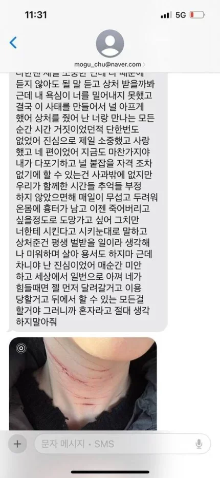
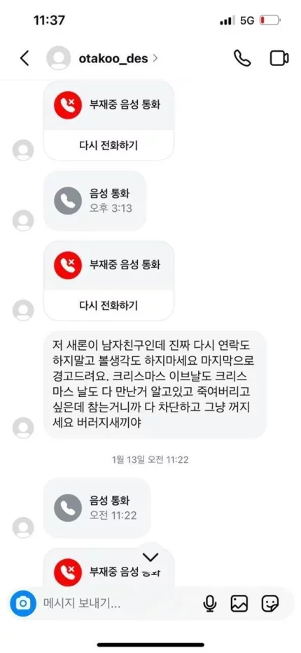
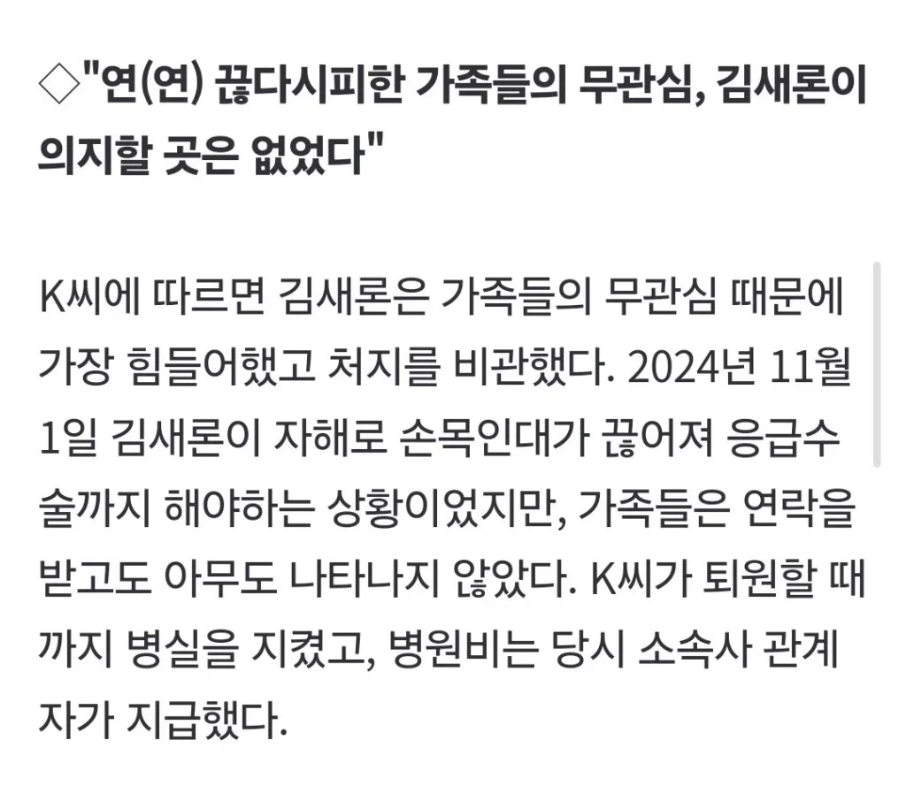
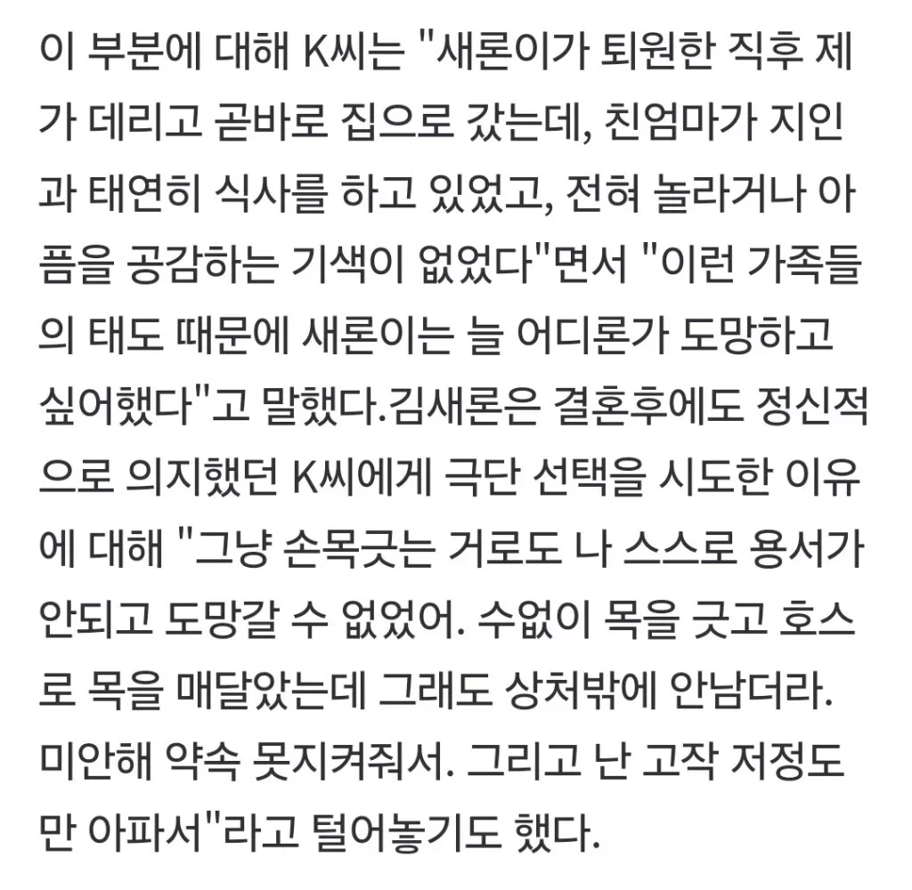
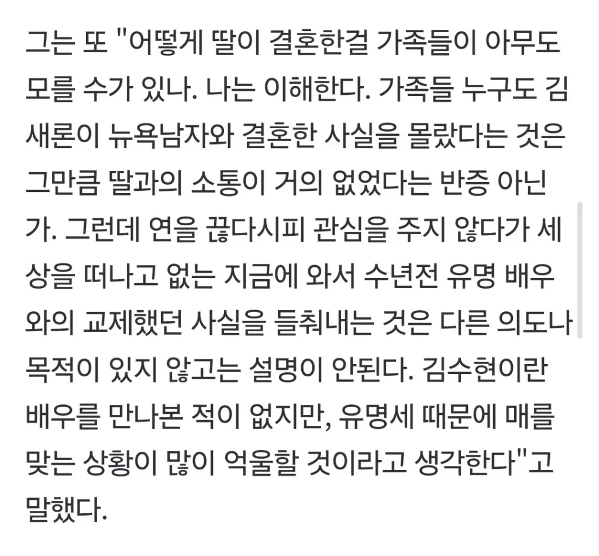
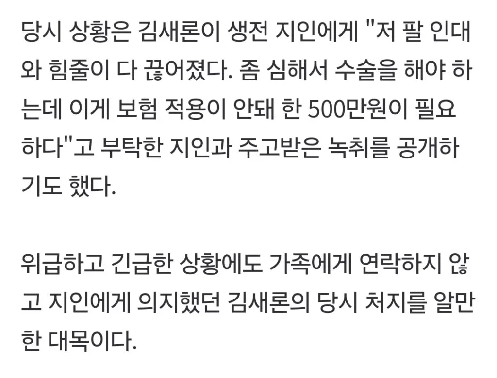
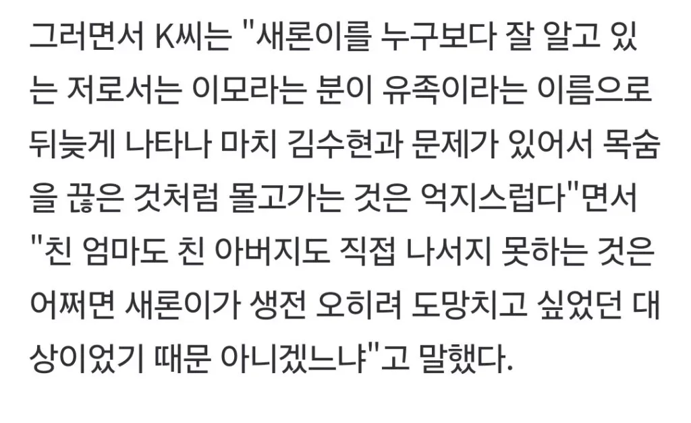
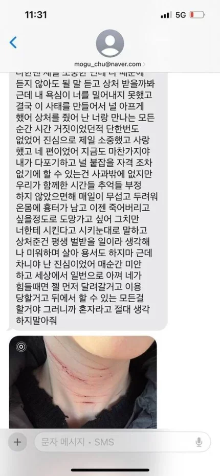
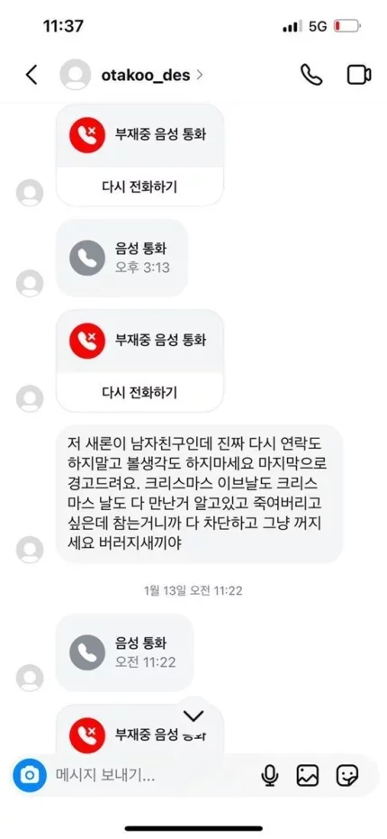
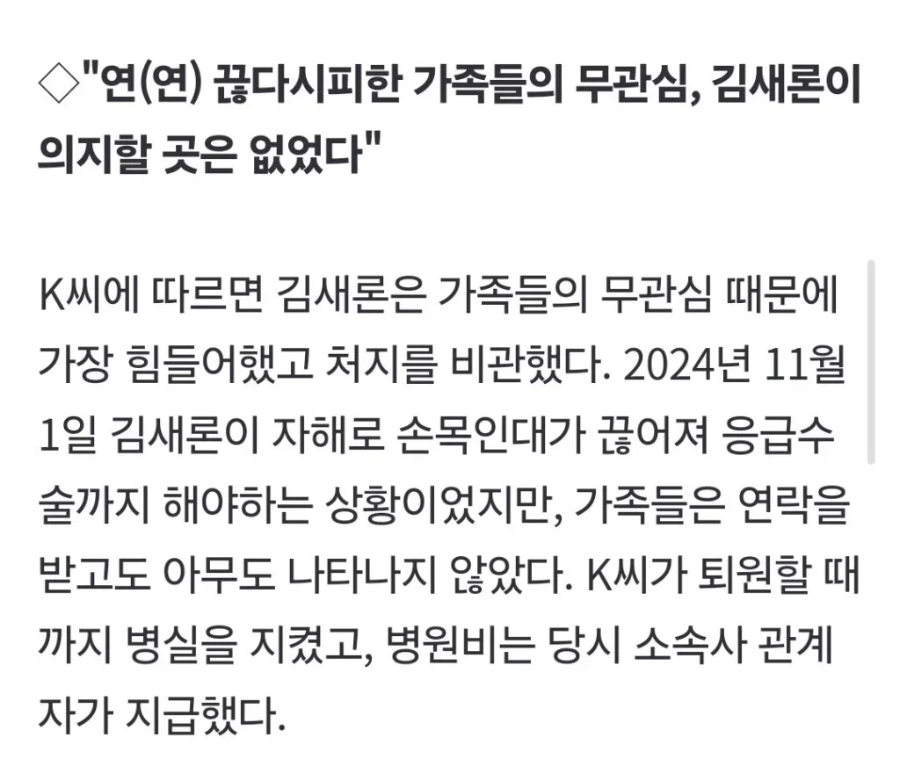
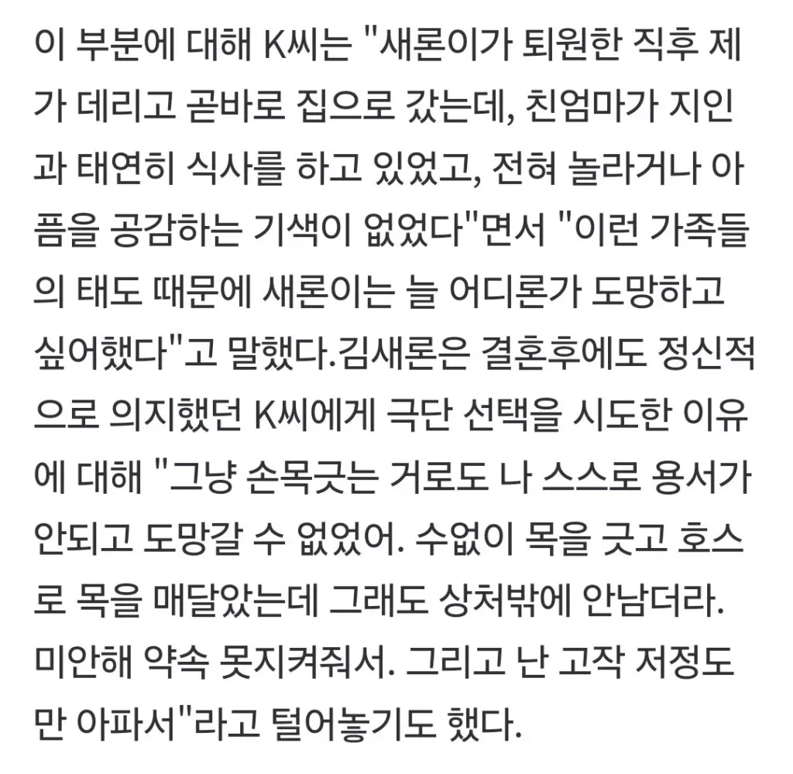
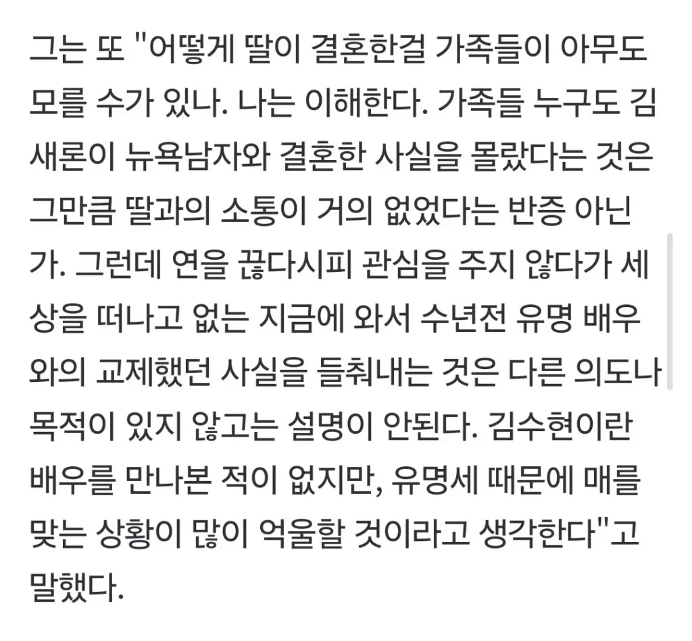
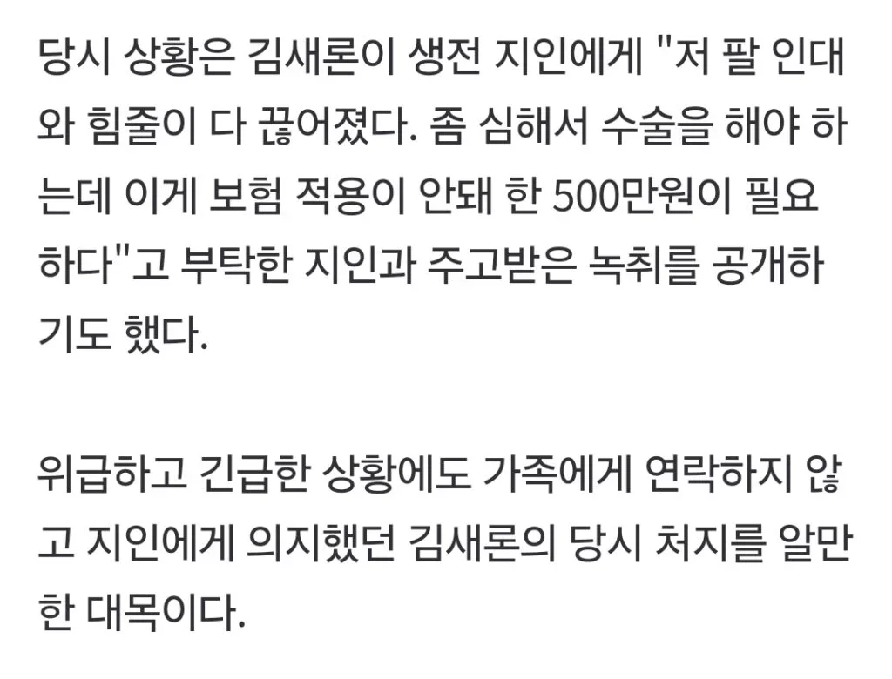
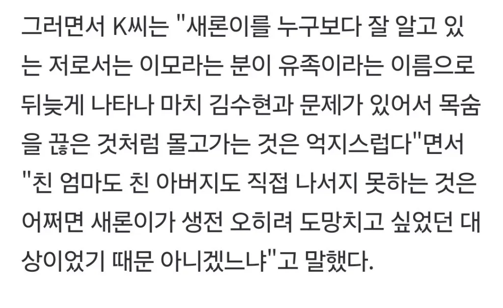